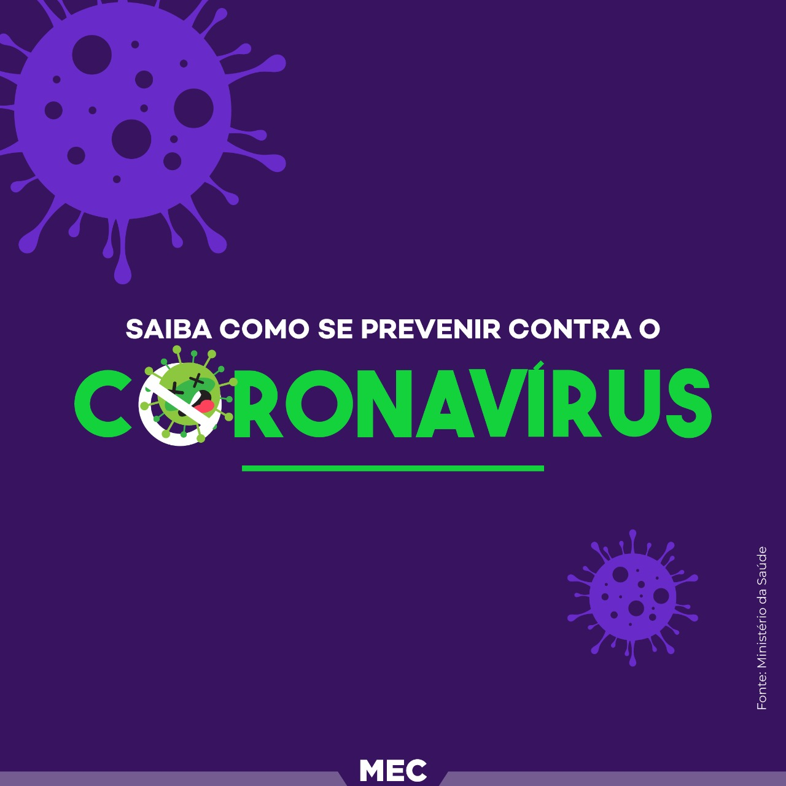
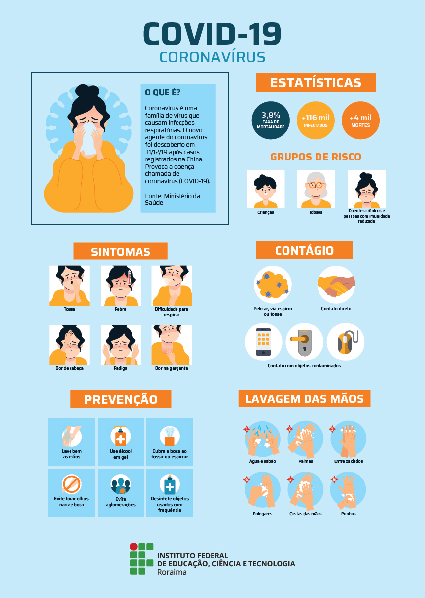
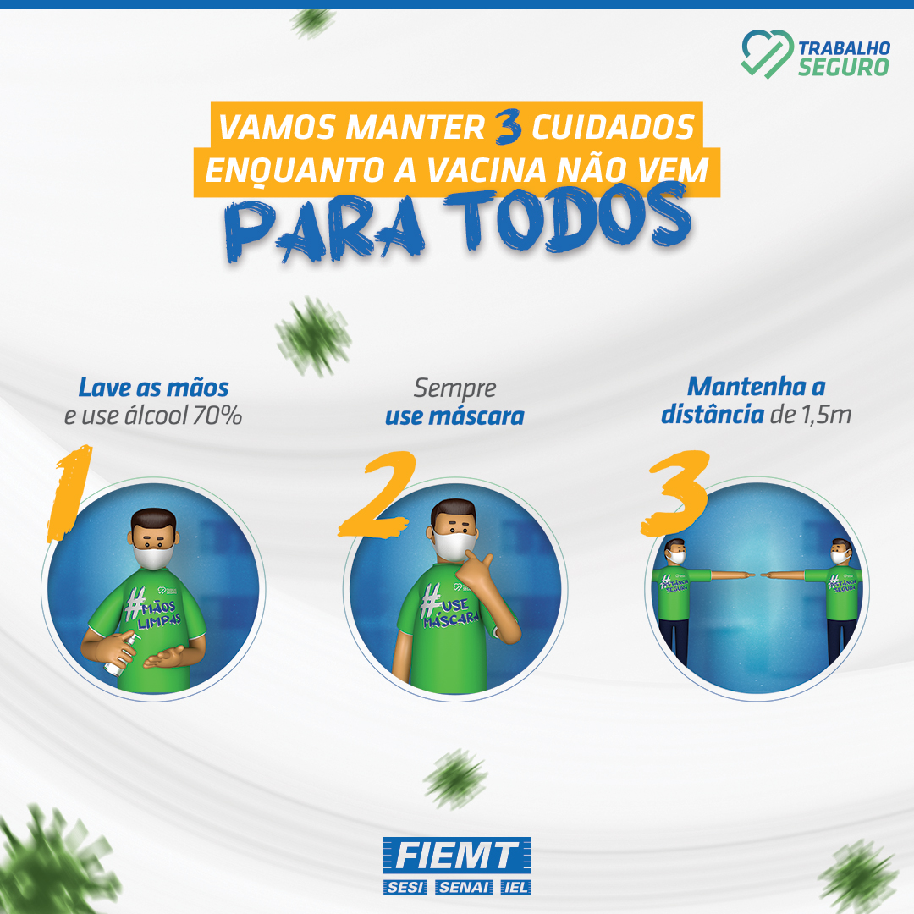

Sintomas mais comuns:
- Febre
- Tosse
- Cansaço
- Perda de paladar ou olfato
Sintomas menos comuns:
- Dores de garganta
- Dor de cabeça
- Dores e desconfortos
- Diarreia
- Irritações na pele ou descoloração dos dedos dos pés ou das mãos
- Olhos vermelhos ou irritados
Sintomas graves:
- Dificuldade para respirar ou falta de ar
- Perda da fala, mobilidade ou confusão
- Dores no peito
Procure atendimento médico imediatamente se apresentar sintomas graves. Sempre ligue antes de ir ao médico ou posto de saúde, clínicas ou hospitais. Pessoas saudáveis que apresentarem os sintomas leves devem acompanhar a situação em casa. Em média, os sintomas aparecem cinco ou seis dias após a infeção pelo vírus. No entanto, eles também podem levar até 14 dias para se manifestarem.
Prevenção
Use máscara.Salve vidas.
Use máscara
Lave suas mãos
Mantenha uma distância segura



Proteja a si mesmo e as pessoas ao seu redor conhecendo os fatos e tomando as precauções apropriadas. Siga os conselhos da autoridade local de saúde.
Fale com a autoridade de saúde local se quiser informações sobre as orientações mais relevantes para sua região.
Para evitar a propagação da COVID-19, siga estas orientações.
Mantenha uma distância segura de outras pessoas (pelo menos 1 metro), mesmo que elas não pareçam estar doentes.
Use máscara em público, especialmente em locais fechados ou quando não for possível manter o distanciamento físico.
Prefira locais abertos e bem ventilados em vez de ambientes fechados. Abra uma janela se estiver em um local fechado.
Limpe as mãos com frequência. Use sabão e água ou álcool em gel.
Tome a vacina quando chegar a sua vez. Siga as orientações locais para isso.
Cubra o nariz e a boca com o braço dobrado ou um lenço ao tossir ou espirrar.
Fique em casa se você sentir indisposição.
Procure atendimento médico se tiver febre, tosse e dificuldade para respirar. Ligue com antecedência para o órgão prestador de cuidados de saúde e peça direcionamento à unidade mais adequada. Isso protege você e evita a propagação de vírus e outras infecções.
Máscaras Máscaras bem ajustadas ao rosto podem prevenir a propagação do vírus para outras pessoas. Isoladamente, elas não oferecem proteção contra a COVID-19, por isso o uso deve ser combinado com o distanciamento físico e a limpeza das mãos. Siga as orientações da autoridade local de saúde.
Fale com a autoridade de saúde local se quiser informações sobre as orientações mais relevantes para sua região.
Para evitar a propagação da COVID-19, siga estas orientações.
Mantenha uma distância segura de outras pessoas (pelo menos 1 metro), mesmo que elas não pareçam estar doentes.
Use máscara em público, especialmente em locais fechados ou quando não for possível manter o distanciamento físico.
Prefira locais abertos e bem ventilados em vez de ambientes fechados. Abra uma janela se estiver em um local fechado.
Limpe as mãos com frequência. Use sabão e água ou álcool em gel.
Tome a vacina quando chegar a sua vez. Siga as orientações locais para isso.
Cubra o nariz e a boca com o braço dobrado ou um lenço ao tossir ou espirrar.
Fique em casa se você sentir indisposição.
Procure atendimento médico se tiver febre, tosse e dificuldade para respirar. Ligue com antecedência para o órgão prestador de cuidados de saúde e peça direcionamento à unidade mais adequada. Isso protege você e evita a propagação de vírus e outras infecções.
Máscaras Máscaras bem ajustadas ao rosto podem prevenir a propagação do vírus para outras pessoas. Isoladamente, elas não oferecem proteção contra a COVID-19, por isso o uso deve ser combinado com o distanciamento físico e a limpeza das mãos. Siga as orientações da autoridade local de saúde.